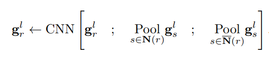
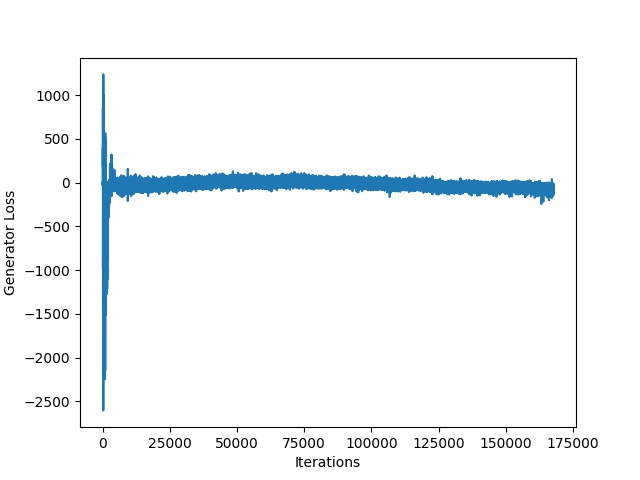
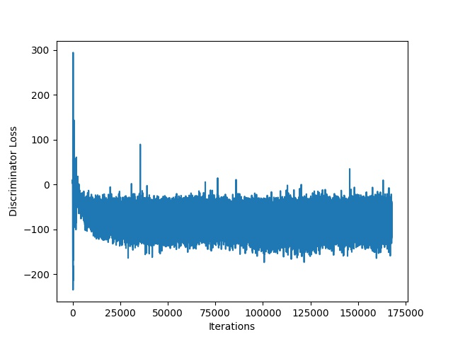
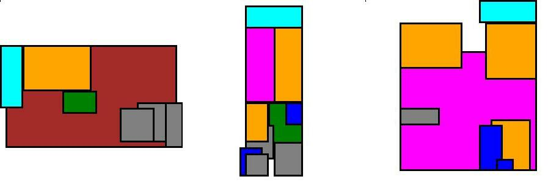
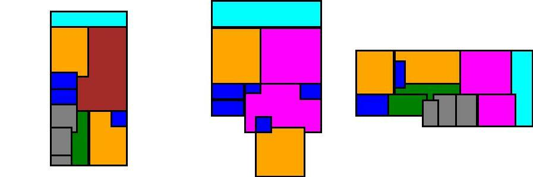

This blogpost tries to reimplement the code of paper "House-GAN: Relational Generative Adversarial Networks for Graph-constrained house layout generation" from Nauata et. al. [1] in a more efficient way. We mention the main points of improvement and try to quantify them in terms of runtime performance. Finally, we try to shed a little bit more light in the new ConvMPN layers.
Imagine being so tired of the city life, that you decide to abandon it and have a peaceful life in a small village! After a lot of search, you find a very picturesque village in South Holland, and you immediately feel that this is the ideal place for your future life. But there is one problem! There is no house that fits your exact needs. Hence, you decide to build your own house. You hire an architect and ask him/her to design a floorplan based on your preferences and needs.
After 2 weeks, he/she shows you the design. However, it is not how you exactly imagined it! The architect promises that in two more weeks he/she will deliver the floorplan of your dreams. This iteration continues, until you lose all hope that you will get what you dreamed of after all.
But don't lose hope yet! The paper House-GAN by Nuata et. al. (2020) (GitHub Repository here) promises to simplify the process of floorplan generation! How cool is that?
The paper employs a Generative Adversarial Network (GAN), which takes as input a bubble diagram representing the connectivity of a floorplan. The bubbles depict the room types, and the links connecting the bubbles depict the adjacency between the rooms. The final output is a 32x32 pixels picture of a floorplan based on the input representation.
The GAN contains - as usual - a Generator network and a Discriminator network. The job of the Generator is to generate a floorplan that is indistinguishable from real floorplans, while the job of the Discriminator is to successfully discriminate between a real floorplan and a generated one.
The Generator gets a bubble graph as an input, with a 128-d noise vector and a one-hot 10-d vector (denoting the room type), for each node of the graph. The output is an image of a floorplan. Obviously, the goal is to make it as realistic as possible.
On the other hand, the Discriminator takes a 32x32-pixel image together with a 10-d one-hot room type vector as input, and produces a boolean response, distinguishing whether the input image is indeed a real one or fake. To achieve that, a similar architecture to the Generator is used, with multiple Leaky-ReLUs.
The objective of the Generator is to minimize the effectiveness of the Discriminator decisions, while the objective of the Discriminator is to maximize its accuracy of correct predictions of the image source!
As mentioned above, the described architecture is a typical Generative Adversarial Network (GAN), with mainly convolutional and ConvMPN layers.
The Generator, consists of three Convolutional, two Transpose Convolutional, two ConvMPN, and one Linear layer. Firstly, the input is processed by the Linear layer, which reshapes it to a three-dimensional shape ). Afterwards, two pairs of ConvMPN and Transpose Convolution layers are applied, upsampling the input to shape ). Finally, two Convolutional layers with Leaky ReLU activations and one with ) activation are applied and produce the final image generated image.
The Discriminator contains a similar architecture but in the backward direction. First, the ) image input passes through three consecutive Convolutional layers with Leaky ReLU actiovation. These layers increase the size of the input to ). Afterwards, two pairs of Convolutional and ConvMPN layers are applied, and downsize the input to size ). Three additional Convolutional layers combined with Leaky ReLU activations translate the input to ) shape. Finally, a linear layer transforms the input to a scalar value.
Convolutional Message Passing Neural Network (Conv-MPN) was initially created by the same group of researchers aiming for Structured Outdoor Architecture Reconstruction. Its main use is on Graph Neural Networks, with the specific purpose of accounting for spatial relationships between the nodes - rooms in this scenario. To update each node's information, a convolution is applied on a tensor that contains:
The pooling allows the concatenation of dense information, and the convolution is mainly used for its spatial reasoning abilites. A major difference between a vanilla Graph Neural Network is the replacement of 1D numerical vector as a node with a 3D spatial feature volume, to aid in the improvement of the convolution's results.

Throughout our result reproduction efforts, we ran and trained both our models and the original ones. We managed to improve its efficiency, by adding multi-GPU capabilities in parts of the training procedure, removed unnecessary transitions of Tensors from CPU to GPU and removed unnecessary function calls. The comparison was made for a training loop on 4 Tesla T4 GPUs.
Time for 1 epoch w/ 32 sized batch in target set D (in seconds):
| Original Code | Original Code w/ improvements | Our Code |
|---|---|---|
| 940.430 | 747.442 | 620.233 |
The tool used for timing function runtime and training time is the profiler provided by PyCharm.
In the data loaders and specifically in the collation function, the masks, nodes and edges in the batch were being populated via appending to python lists, which is notorious for the performance issues it causes in terms of memory usage and execution time. What we do instead is preallocate the tensors and populate them using slices. For example:
all_rooms_mks = torch.empty((n_rooms_total, IMAGE_SIZE_OUT, IMAGE_SIZE_OUT), dtype=torch.float) all_nodes = torch.empty((n_rooms_total, 10), dtype=torch.float) ... for i, (rooms_mks, nodes, edges) in enumerate(batch): ... all_rooms_mks[node_offset:node_offset + n_nodes] = rooms_mks all_nodes[node_offset:node_offset + n_nodes] = nodes
Another improvement performed in the context of the model training has to do with the generator’s call. More specifically in every minibatch run, the model starts with training the discriminator network. To do that, random noise is fed into the Generator, so that a floorplan is generated. Afterwards, the Generator network is trained. Then, the Generator performs a second forward execution, even though its weights haven't been altered. We found that this double generator call per minibatch run is redundant, hance we removed it the second forward run, in order to improve the runtime. Don’t forget that the complete training of the model is quite intense, since it involves training and evaluating the model for each house category individually!
A particular diffuculty that we faced during reproduction was in the data loading part. During this stage, the data underwent complex transformations which involve translations, normalizations, and resizings so that nodes, edges, and room masks can be finally created and passed to the model. If augmentation is applied (in the case of the training loader for example), additional transformations are used which rotate and “mirror” the floorplans. The complexity we came across in this part of the implementation can be justified by the multifaceted nature of the data, in both the preprocessing end and the consuming end (the graph creation).
The initial dataset, extracted from LIFULL HOME’s database, is a collection of floorplans. Each of these consists of two lists: one containing the types of the rooms (living room, kitchen, etc) and another containing the corresponding rooms' "bounding boxes", which are pairs of the coordinates of each room's uppper left and bottom right corners in the floorplans.
The mapping of room types is shown in the table below:
| Value | Room Type |
|---|---|
| 1 | Living Room |
| 2 | Kitchen |
| 3 | Bedroom |
| 4 | Bathroom |
| 5 | Missing |
| 6 | Closet |
| 7 | Balcony |
| 8 | Corridor |
| 9 | Dining Room |
| 10 | Laundry Room |
To make the description clearer, an example of a floorplan from the dataset before any processing is applied could look like this:
[
[2.0, 3.0, 4.0],
[
array([array([132, 6, 148, 65]),
array([110, 68, 208, 130]),
array([132, 91, 160, 130]
]
]
This means that in this particular floorplan, we have three rooms of types 2, 3, 4 (so kitchen, bedroom and bathroom respectively), where the kitchen's area is defined by the coordinates and etc.
The data go through the following transformations:
To illustrate how the data that is fed to the model looks like after the transformations, we provide the following example (corresponding to the example given earlier):
# nodes (rooms) tensor([[0., 1., 0., 0., 0., 0., 0., 0., 0., 0.], [0., 0., 1., 0., 0., 0., 0., 0., 0., 0.], [0., 0., 0., 1., 0., 0., 0., 0., 0., 0.]]) # edges (how the rooms are connected) tensor([[ 0, 1, 1], [ 0, -1, 2], [ 1, 1, 2]]) # room masks tensor([ [[-1., -1., -1., -1., -1., -1., ..., -1., -1., -1.], [-1., -1., -1., -1., -1., -1., ..., -1., -1., -1.], [-1., -1., -1., -1., -1., -1., ..., -1., -1., -1.], [-1., -1., 1., 1., 1., -1., ..., -1., -1., -1.], [-1., -1., 1., 1., 1., -1., ..., -1., -1., -1.], [-1., -1., 1., 1., 1., -1., ..., -1., -1., -1.], [-1., -1., 1., 1., 1., -1., ..., -1., -1., -1.], [-1., -1., -1., -1., -1., -1., ..., -1., -1., -1.], ..., [-1., -1., -1., -1., -1., -1., ..., -1., -1., -1.], [-1., -1., -1., -1., -1., -1., ..., -1., -1., -1.], [-1., -1., -1., -1., -1., -1., ..., -1., -1., -1.]], ..., ])
Notice in the room mask the area filled with '1's. This area is occupied by the respective room.
During the batch-collation step, nodes, edges and masks of the batch are stacked vertically and returned as tensors, along with 2 extra tensors to be used as indices, in case multiple GPUs are to be employed.
In order to perform the training, the floorplans were divided to groups by their number of rooms.
| Group Name | A | B | C | D | E |
|---|---|---|---|---|---|
| Number of rooms | 1-3 | 4-6 | 7-9 | 10-12 | 13+ |
Training was performed individually for each floorplan group. This was in alignmend to their original paper, because training and evaluating the networks with floorplans from the same room number could potentially lead to over-fitting. In other words, it is possible that the Generator would produce (almost) the same image for floorplans with the same number of rooms.
After loading the training dataset minibatches, the training began with generating an image, given a noise vector for each room of the input graph, sampled from standard normal distribution. Afterwards, the Discriminator was executed twice, once for the real image, and once for the generated one.
Then, the Discriminator loss is calculated as follows:
where
The Discriminator network is trained by Adam optimizer, with a learning rate of ).
Next, the Generator is trained, based on the updated prediction of the Discriminator above the generated image.
The Generator loss is simply:
where ) is the updated prediction of the Discriminator after the training step.
The Generator is again trained with Adam optimizer, with a learning rate of ).
The training procedure goes on for 50 epochs, while it is parallelizeable. In our case, we ran the training on a Google Cloud server with 4 GPUs.


In the absence of a considerable number of experts in order to evaluate the compatibility and realism scores this reproduction focuses on the calculation of the diversity metric. According to original paper diveristy is measured by using the FID score with the rasterized layout images.
As mentioned above, the methodology followed by Nuata et al. [1] was to evaluate the model on the not used set during training. For that reason 5 diversity scores were obtained. However, here only the one referring to the subset 10-12 will be provided, considering that training the model with such a large dataset is computationally very expensive even though a parallelism is used in our approach which made the whole process much faster as indicated on the section Code Improvements.
Furthermore, due to computational cost it is worth noting that the number of iterations used in our case was 200000, while the demo provided by the author of the paper refers to 500000. A higher number would provide better scores, which leads us to expect slightly worse results than the original paper.
On a more practical perspective, two folders were created, one containing real data and another one containing generated data based on the trained model. The two files created are passed to pytorch-fid [2] which calculated the final score. In order to avoid any lucky generations, instead of having the same amount of real and generated data, the number of the second was tenfold the first. In such a way 10 generated floorplans would be compared to each ground truth, following the same approach as the original paper for a fairer comparison.
Lastly, some of the generated and real floorplans are presented in order to comprehend the capabilities of this algorithm.
| Full re-implementation with 200k iterations | Original paper code using pre-trained data with 500k iterations | Original paper |
|---|---|---|
| 17.68 | 11.8 | 11.6 |
Examples of fake (generated) floorplans:

Examples of real floorplans:

While papers' results were quite difficult to reproduce a few years back, the scientific community's standards have risen. Nowadays, authors tend to include crucial details regarding their work, such as hyperparameters, software environments, training equipment, datasets and even the actual code.
That unlocked university projects such as this one, where we managed to reproduce results of a paper, where we completely rewrote the software and using the same dataset.
After completing this project we:
However, we also appreciated the importance of paper reproduction. Someone that undertakes such an endeavour contributes in research in a unique manner. The researcher has the opportunity to:
Our implementation can be found here.
For this reproduction, we divided the work into 4 tasks, and each member of the group was assigned to one of them. Specifically:
This was a fun project for us to work on and we learned a lot.
[1] N. Nauata, K. Chang, C. Cheng, G. Mori, and Y. Furukawa, “House-gan: Relational generative adversarial
networks for graph-constrained house layout generation,” CoRR, vol. abs/2003.06988, 2020, Available: https://arxiv.org/abs/2003.06988
[2] M. Seitzer, "pytorch-fid: FID Score for PyTorch." https://github.com/mseitzer/pytorch-fid, 2020.